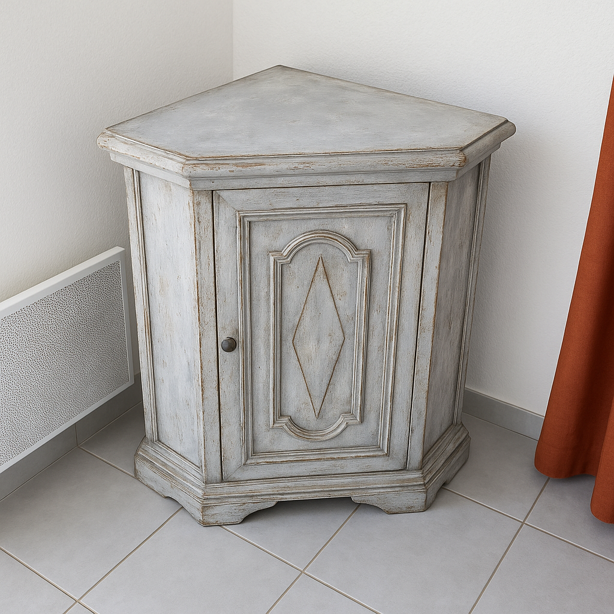
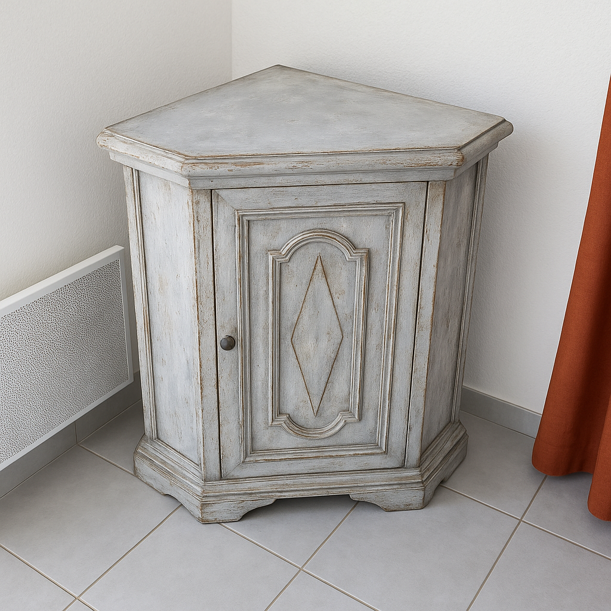
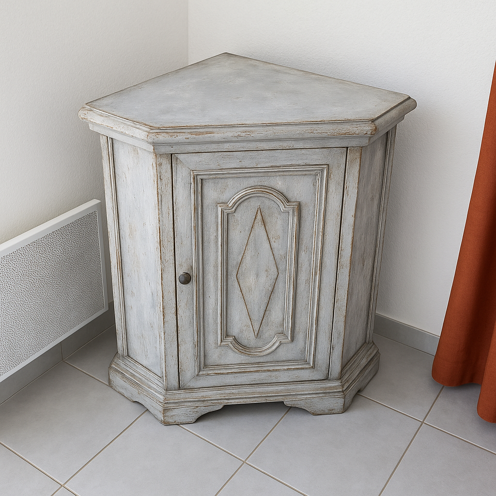

Galerie avant / après
 


Création et relooking de meubles uniques & naturels
Découvrez des meubles relookés à la main dans un style vintage, patiné ou brut, inspiré par les matières naturelles et les tendances 2025. Chaque pièce est unique, pensée pour donner du charme et une seconde vie à votre intérieur.

Commandez sur ma boutique Selency ou contactez-moi pour une création personnalisée.
Vous avez une question, une idée ou un meuble à relooker ?
Email : contact@atelier-vert-olive.fr
Instagram : @atelier.vert.olive